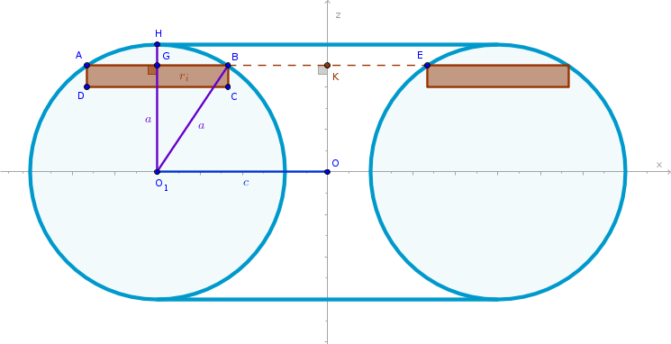
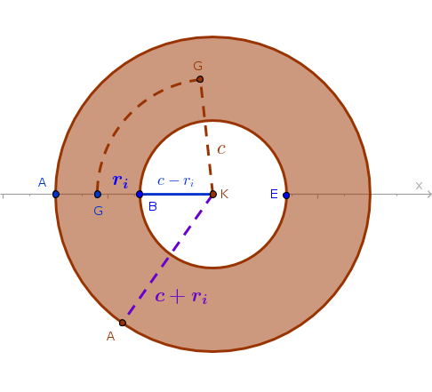
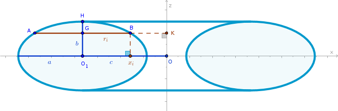

Circular Ring Torus
Problem
Find the volume of a circular ring torus with \(O_1H = a\) and \(OO_1 = c\).
A circular ring torus is a three-dimensional solid formed by revolving a circle with the radius \(a\) and the center \(O_1\) about the \(z\) axis in such a way that \(c > a\) while \(O_1H\) remains parallel to \(Oz\).
Solution
Choose a thin right circular ring as a primitive part represented in the drawing below as an \(ABCD\) rectangle and its counterpart with a vertex \(E\). Each primitive ring, topologically, is the difference between two right circular cylinders: the cylinder with the radius \(KA\) and the cylinder with the radius \(KB = KE\) which we can name a virtual cylinder since it represents the void - absence of torus - between the points \(B\) and \(E\):
Consider the corresponding half of the torus and divide \(O_1H = a\) into \(n\) line segments of equal length:
$$AD = BC = \Delta z = \frac {a}{n}$$which will play the role of heights of primitive parts.
To compute the volume of the \(i-\)th primitive ring we cut the torus with a plane through \(K\) perpendicular to \(Oz\):
Then:
$$V'_i = V'_i(r=KA) - V'_i(r=KB) =$$ $$\pi (c + r_i)^2\frac {a}{n} - \pi (c - r_i)^2 \frac {a}{n} =$$ $$\frac {\pi a}{n}((c + r_i)^2 - (c - r_i)^2) =$$ $$\frac {4\pi acr_i}{n}$$Find \(r_i\) from the right, by construction, triangle \(\triangle O_1GB\) via the Pythagorean theorem:
$$r_i = \sqrt{a^2 - O_1G^2} =$$ $$\sqrt{a^2 - z_i^2} =$$ $$\sqrt{a^2 - \frac {a^2}{n^2}i^2} =$$ $$\frac {a}{n}\sqrt{n^2 - i^2}$$and:
$$V'_i = \frac {4\pi a^2c}{n^2}\sqrt{n^2 - i^2}$$The volume of the entire torus is the sum of volumes of its two halves:
$$V' = 2 \times \sum_{i = 1}^n V'_i =$$ $$\frac {8\pi a^2c}{n^2}\sum_{i = 1}^n\sqrt{n^2 - i^2}$$Apply the limit to \(V'\) as \(n \to +\infty\):
$$V = \lim_{n\to +\infty} V' =$$ $$8\pi a^2c \lim_{n\to +\infty}\frac {1}{n^2}\sum_{i = 1}^n\sqrt{n^2 - i^2}$$But in Circle chapter we have already found that the magnitude of the above limit is \(\frac {\pi}{4}\) and hence:
$$V = 8\pi a^2c \times \frac {\pi}{4} = 2\pi^2a^2c$$and:
$$\bbox[#e8e8e8,3pt]{V = 2 \pi^2 a^2c}$$If we rearrange the above formula as follows: $$V = 2 \pi c \times \pi a^2$$
then it can be interpreted as a volume of a right circular cylinder with the radius \(a\) and the height \(2 \pi c\).
Elliptic Ring Torus
is a three-dimensional solid formed by revolving an ellipse with the center at \(O_1\) and a semi-major axis \(a\) (measured along the \(x\) axis) and a semi-minor axis \(b\) (measured along the \(z\) axis) about \(Oz\) in such a way that \(c > a\) while \(O_1H\) remains parallel to \(Oz\):
Choose a thin right circular ring as a primitive part to approximate the volume of an elliptic ring torus with and position it in the same way as it was positioned within the circular ring torus. Then:
$$V'_i = V'_i(r=KA) - V'_i(r=KB) =$$ $$\pi (c + r_i)^2 \frac {b}{n} - \pi (c - r_i)^2 \frac {b}{n} =$$ $$\frac {4 \pi bc}{n} r_i$$The canonical equation of the left, for example, ellipse in the \(zx\) plane is:
$$\frac {(x + c)^2}{a^2} + \frac {z^2}{b^2} = 1$$where we take \(c > 0\).
For the point \(B\) on the perimeter of the ellipse then:
$$\frac {(x_i + c)^2}{a^2} + \frac {z_i^2}{b^2} = 1$$ $$x_i + c = \frac {a}{b} \sqrt {b^2 - z_i^2} =$$ $$\frac {a}{b} \sqrt {b^2 - \frac {b^2}{n^2}i^2} =$$ $$\frac {a}{n} \sqrt {n^2 - i^2}$$Since \(x_i < 0\) for \(r_i\) we have:
$$r_i = |-c - x_i| = c + x_i = \frac {a}{n} \sqrt {n^2 - i^2}$$The volume of the \(i-\)th primitive ring then is:
$$V'_i = \frac {4 \pi abc}{n^2} \sqrt {n^2 - i^2}$$The approximate volume of the entire elliptic ring torus is the sum of volumes of its two halves:
$$V' = 2 \times \sum_{i=1}^n V'_i =$$ $$\frac {8 \pi abc}{n^2} \sum_{i=1}^n \sqrt {n^2 - i^2}$$Applying the corresponding limit to \(V'\) we obtain:
$$\bbox[#e8e8e8,3pt]{V = 2 \pi^2 abc}$$or:
$$V = \pi ab \times 2 \pi c$$which can be interpreted as a volume of a right elliptic cylinder of height \(2 \pi c\).
\(\blacksquare\)